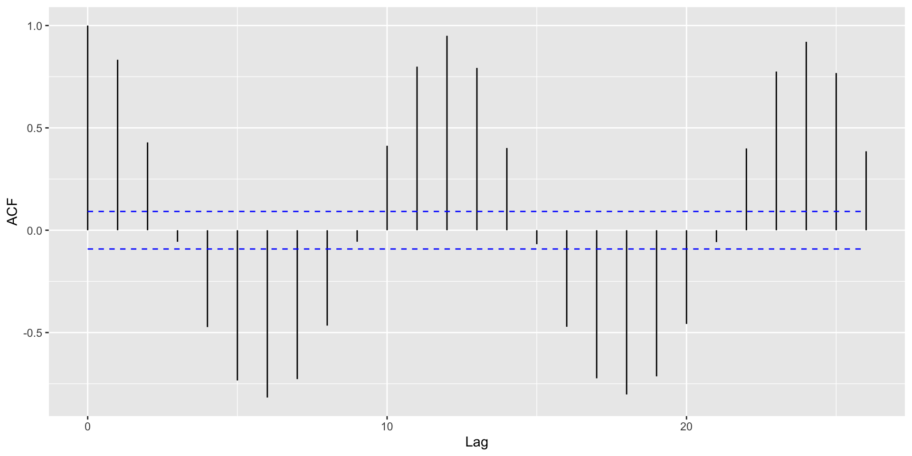

Time Series, Autocorrelation, and Seasonal Decomposition
2025-03-31
Announcements, previously, and today…
HW7 is due Wednesday March April 2nd by 11:59 PM ET
Graphics Critique 2 is due TONIGHT!
You do NOT have lab this week - CARNIVAL!
Last time:
Discussed various aspects of visualizing trends
When visualizing many lines, often useful to consider highlighting a small subset
TODAY: Time series, autocorrelation, and seasonal decomposition
Things of interest for time series data
Time series can be characterized by three features:
Trends: Does the variable increase or decrease over time, on average?
Seasonality: Are there changes in the variable that regularly happen (e.g., every winter, every hour, etc.)? Sometimes called periodicity.
Noise: Variation in the variable beyond average trends and seasonality.
Moving averages are a starting point for visualizing how a trend changes over time


Be responsible with your axes!

Be responsible with your axes!

Moving Average Plots
The Financial Times COVID-19 plots displayed a moving average (sometimes called a rolling average)
Intuition
Divide your data into small subsets (“windows”)
Compute the average within each window
Connect the averages together to make a trend line
Sometimes called a simple moving average
This is exactly what we did with LOESS… we called this a sliding window, but it’s the same thing


How are moving averages computed?
Intuition
Divide your data into small subsets (windows)
Compute the average within each window
Connect the averages together to make a trend line
Mathematically, a moving average can be written as the following:
\[\mu_k = \frac{\sum_{t=k - h + 1}^k X_t}{h}\]
Large \(h\): Smooth line; captures global trends
Small \(h\): Jagged/volatile line; captures local trends
Working with Time Series
co2: Mauna Loa Atmospheric CO2 Concentration dataset (monthly \(\text{CO}^2\) concentration 1959 to 1997)

Formatting Dates
Can use as.Date() to create time indexes.
Default format is Year/Month/Day. For something else, need to specify format in as.Date() (e.g., format = "%m/%d/%Y")
Use scale_x_date() to create interpretable axis labels
Use ggseas package to plot moving averages

Other Moving Averages
Two other common averages: Cumulative moving averages and weighted moving averages.
- Cumulative moving average: The average at time \(k\) is the average of all points at and before \(k\). Mathematically:
\[\mu_k^{(CMA)} = \frac{\sum_{t=1}^k X_t}{k}\]
- Weighted moving average: Same as simple moving average, but different measurements get different weights for the average.
\[\mu_k^{(WMA)} = \frac{\sum_{t=k - h + 1}^k X_t \cdot w_t}{ \sum_{t=k - h + 1}^k w_t}\]
Working with lags
Time series data is fundamentally different from other data problems we’ve worked with because measurements are not independent
Obvious example: The temperature today is correlated with temperature yesterday. (Maybe not in Pittsburgh?)
Important term: lags. Used to determine if one time point influences future time points.
Lag 1: Comparing time series at time \(t\) with time series at time \(t - 1\).
Lag 2: Comparing time series at time \(t\) with time series at time \(t - 2\).
And so on…
Let’s say we have time measurements \((X_1, X_2, X_3, X_4, X_5)\).
The \(\ell = 1\) lag is \((X_2, X_3, X_4, X_5)\) vs \((X_1, X_2, X_3, X_4)\).
The \(\ell = 2\) lag is \((X_3, X_4, X_5)\) vs \((X_1, X_2, X_3)\).
Consider: Are previous outcomes (lags) predictive of future outcomes?
Autocorrelation
Autocorrelation: Correlation between a time series and a lagged version of itself.
Define \(r_{\ell}\) as the correlation between a time series and Lag \(\ell\) of that time series.
Lag 1: \(r_1\) is correlation between \((X_2, X_3, X_4, X_5)\) and \((X_1,X_2,X_3,X_4)\)
Lag 2: \(r_2\) is correlation between \((X_3, X_4, X_5)\) and \((X_1,X_2,X_3)\)
And so on…
Common diagnostic: Plot \(\ell\) on x-axis, \(r_{\ell}\) on y-axis.
Tells us if correlations are “significantly large” or “significantly small” for certain lags
To make an autocorrelation plot, we use the acf() function; the ggplot version uses autoplot()
Autocorrelation plots

Autocorrelation Plots and Seasonality
With strong global trends, autocorrelations will be very positive.
Helpful: Visualize autocorrelations after removing the global trend (compute moving average with rollapply())
Autocorrelation Plots and Seasonality
Seasonality Decomposition
Remember that there are three main components to a time series:
Average trends
Seasonality
Noise
Use ggsdc() (from ggseas) to decompose a time series into these three components
Plots the observed time series.
Plots a loess curve as the global trend.
Plots another loess curve on (observed - trend) as the seasonality.
Plots the noise (observed - trend - seasonality).
Seasonality Decomposition

Recap and next steps
Fundamental characteristic of time series data: measurements are dependent over time
The things to look out for in time series data are: (1) Average trends, (2) Seasonality, (3) Noise
Autocorrelation plots are also useful for assessing average trends and seasonality.
HW7 is due Wednesday!
Graphics Critique 2 is due TONIGHT!
Next time: Animations, infographics, and annotations
Recommended reading: CW CH 13 Visualizing time series and other functions of an independent variable, CW CH 14 Visualizing trends